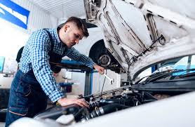
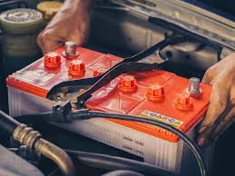
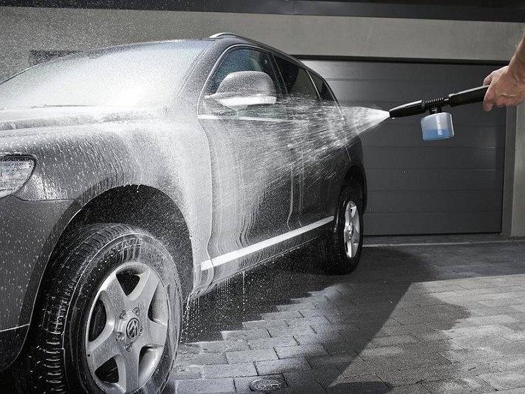
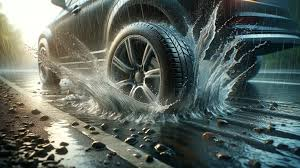
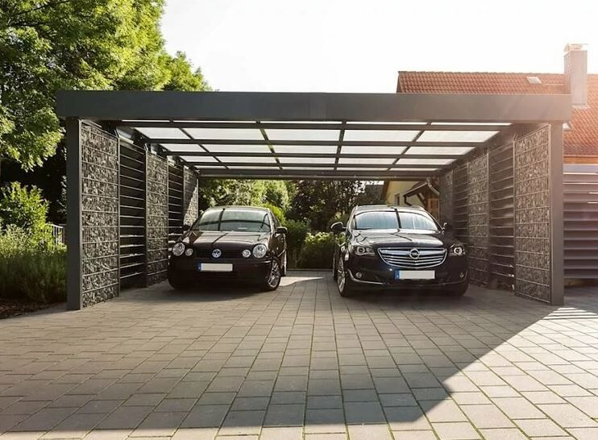

Regularne przeglądy
sprawdzaj oleje, filtry i inne płyny eksploatacyjne.

Wymiana opon
kontroluj ciśnienie i zużycie bieżnika.

Dbaj o akumulator
utrzymuj go w dobrym stanie, zwłaszcza zimą.

Czystość pojazdu
regularnie myj samochód, szczególnie podwozie.

Płynna jazda
unikaj gwałtownych przyspieszeń i hamowań.

Parkowanie w cieniu
zabezpieczaj lakier przed słońcem.